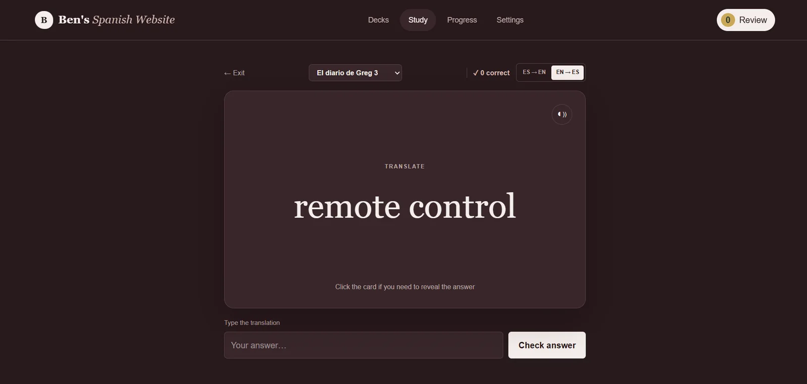
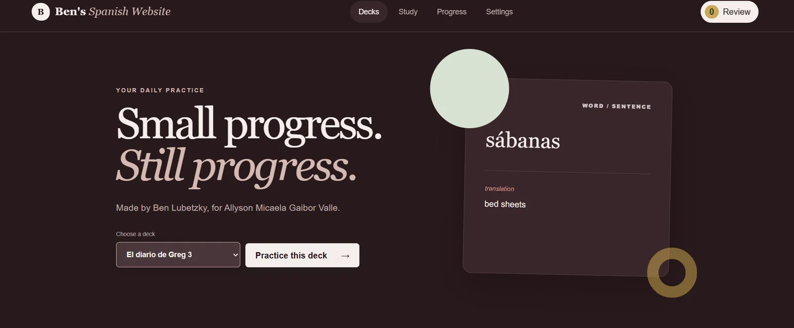
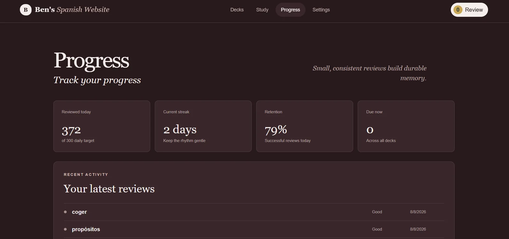
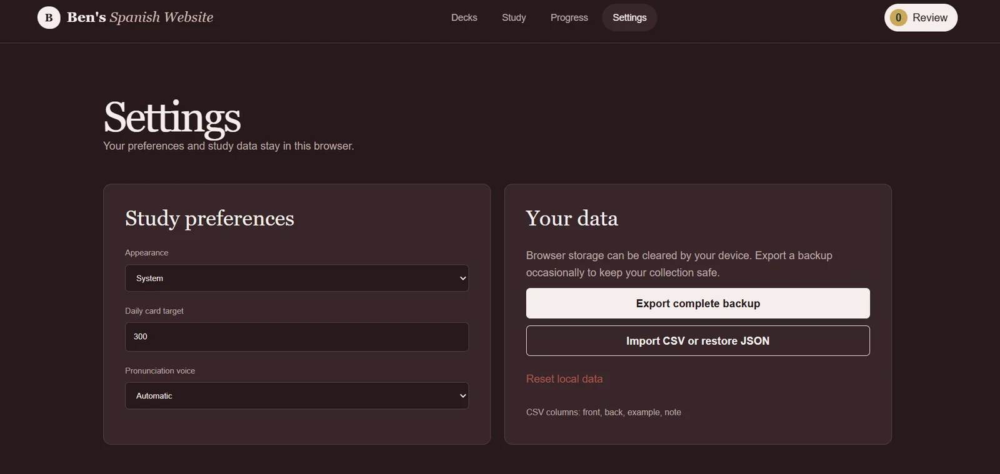

← All work
Spanish Learning Website
A flashcard app for learning Spanish vocabulary, with typed answers in both directions, pronunciation, and progress saved in the browser.
- Role
- Frontend developer
- Team
- Solo
- Status
- Complete
- Links
- Code ↗

Overview
- Words and sentences are organised in decks. You study by typing the translation, Spanish to English or English to Spanish, and cards come back for review over time.
- A progress page shows daily reviews and your streak.
What I built
- Four screens: decks, study, progress and settings.
- Pronunciation using the browser's built-in speech synthesis.
- Saving everything in the browser, with CSV import and JSON backup. There's no backend.
Stack
- JavaScript
- HTML
- CSS
- Web Speech API
- Local storage


